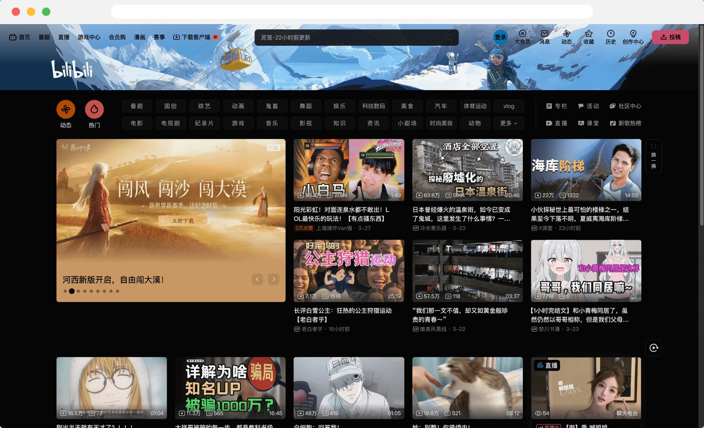

给 B 站关个灯
晚上刷 B 站，满屏白底太晃眼。DarkBili 是一个浏览器扩展，把 bilibili.com 变成暗色，视频、图片和封面保持原样。
免费、开源，支持 Chrome、Edge 和 Firefox。

能做什么
- 点工具栏里的小电视，在 暗色 亮色 跟随系统 之间切换，不用刷新页面。
- 视频、图片、封面和表情保持原来的颜色。
- 首页、视频、番剧、直播、动态、个人空间、消息中心这些常用页面都单独调过。
- 影视、Toy 这类 B 站本来就是深色的页面，保持原样不动。
怎么做到的
DarkBili 用 CSS 滤镜把整个页面的颜色反转，再把视频和图片反转回来。它只在 bilibili.com 上运行，不读取你的账号，也不收集任何数据。
代价是：开启后 NVIDIA 的视频超分辨率和 RTX HDR 不会生效（#9）；在比较老的电脑上，显卡占用也会高一些。